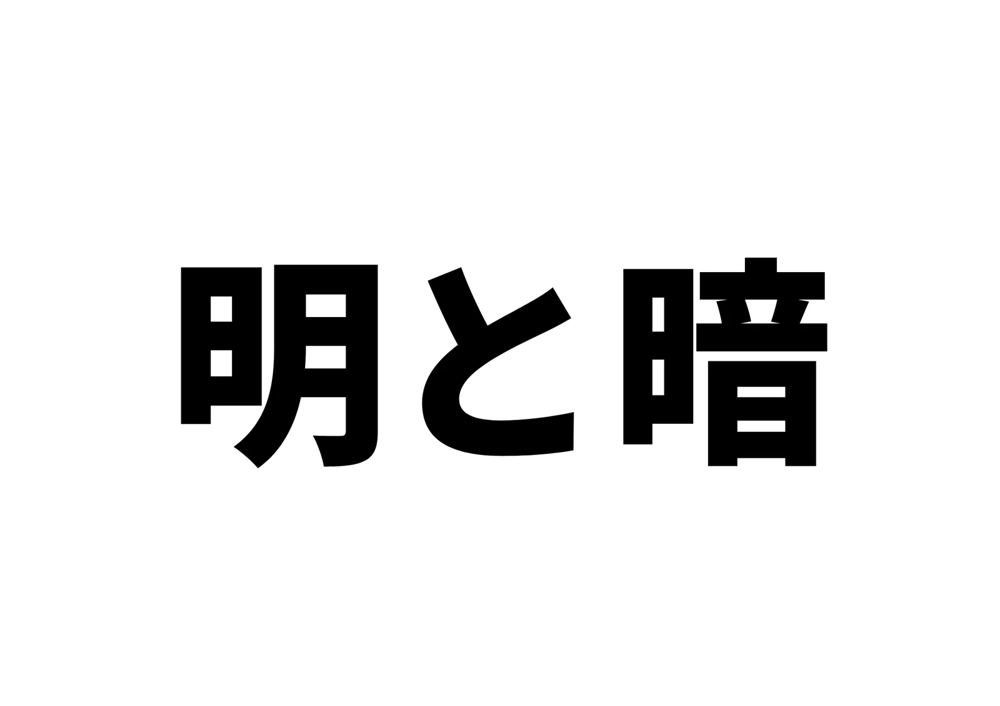
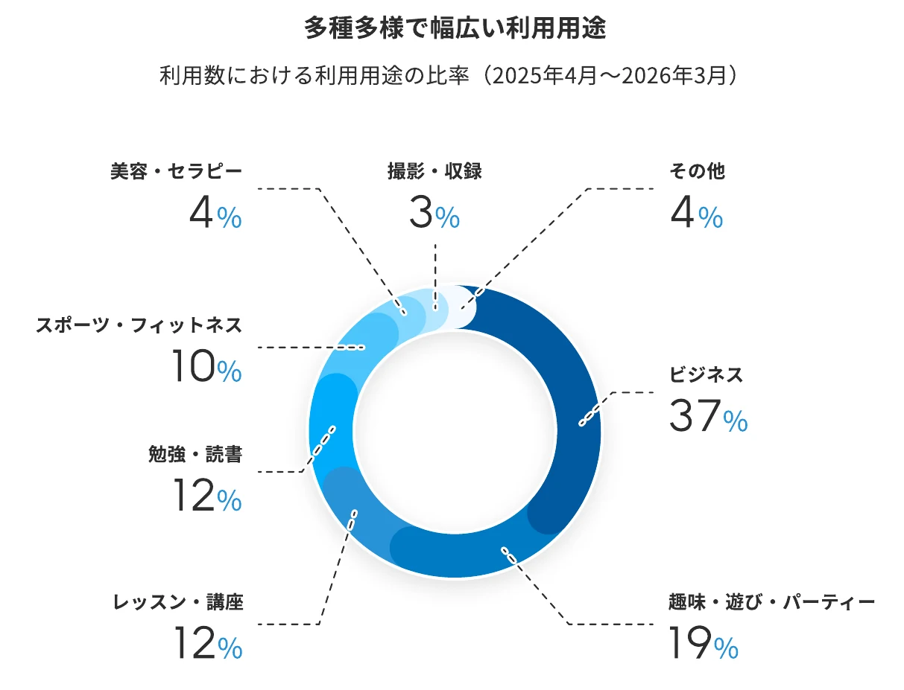
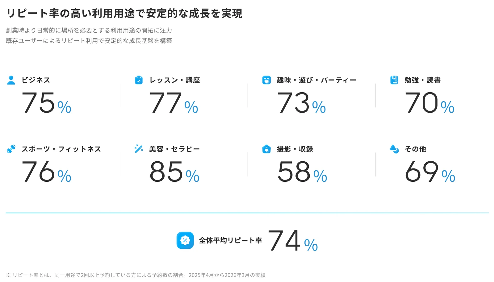
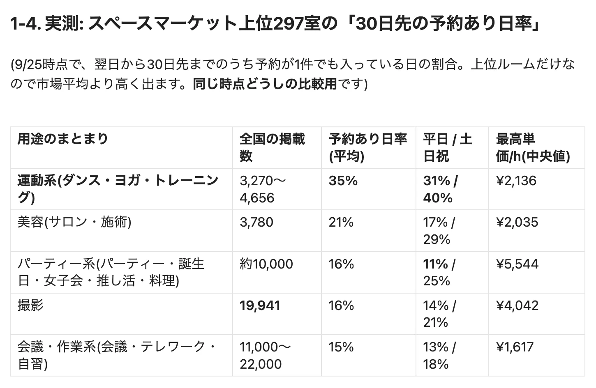
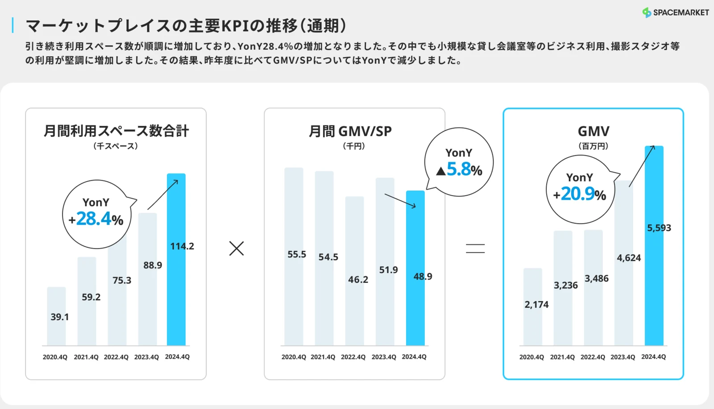
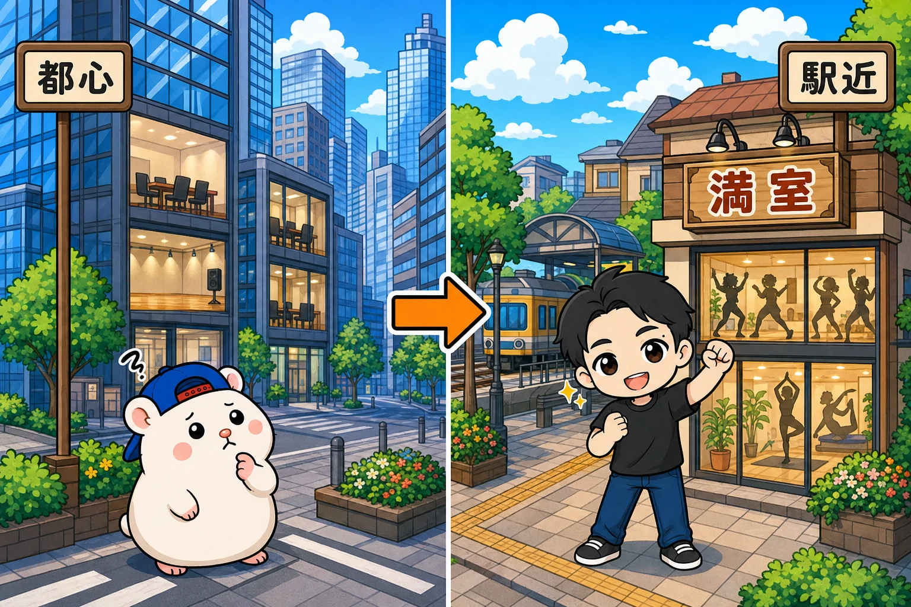
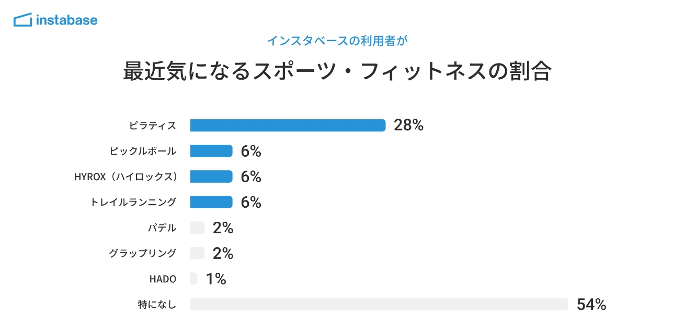

いまレンタルスペースを出すなら、「ダンススタジオ」です。
ダンス、ピラティス、トレーニングのスタジオです。
インスタベースとスペースマーケット。
2大ポータルの決算資料を読みこみました。
掲載スペースの予約状況も調べました。
伸びているジャンルと、伸びていないジャンル。
はっきり差が出ていたので、まとめます。
伸びたのはダンススタジオ。伸びなかったのは撮影

出典: 株式会社Rebase(インスタベース運営)2027年3月期 第1四半期 決算説明資料(2026年8月)
インスタベースは、決算資料で「どの用途で予約されたか」の割合を毎年出しています。
これを予約件数に直して、3年前と比べてみました。
・ダンス・ヨガなどの運動系: 約2.8倍
・ビジネス(会議・面接など): 約2.4倍
・パーティー・趣味: 約1.8倍
・撮影・収録: 約1.2倍
インスタベース全体の予約は、3年で約1.9倍です。
運動系はそれを大きく上回り、撮影はほぼ横ばい。
ぼくは撮影スタジオもやってきたので、これは実感とも合います。
一時期はよかった。
でも、いまは伸びていません。
くり返し使われるのは、レッスンと美容

出典: 株式会社Rebase 2027年3月期 第1四半期 決算説明資料(2026年8月)
もう1つ、見てほしい数字があります。
リピート率です。
同じ用途で2回以上予約した人の割合を、インスタベースが出しています。
・美容・セラピー: 85%
・レッスン・講座: 77%
・ダンス・ヨガなどの運動系: 76%
・撮影・収録: 58%
レッスンや運動は、毎週同じ部屋を借ります。
ダンスの先生も、ピラティスの先生も、パーソナルトレーナーも、場所を持たずに教えている人が増えています。
その人たちが「いつもの部屋」として使ってくれる。
撮影は、そうはいきません。
1回撮ったら終わり、が多いんです。
新しいお客さんを毎回つかまえるか。
同じお客さんに毎週来てもらうか。
この差は、そのまま売上の安定につながります。
平日も埋まるのは、運動系だけ

出典: ぼくの調査ノート(2026年9月25日時点の実測)
決算資料だけでは、本当に埋まっているかまでは分かりません。
なので、スペースマーケットの上位297室の予約カレンダーを調べました。
見たのは「30日先までのうち、予約が1件でも入っている日の割合」です。
・運動系(ダンス・ヨガ・トレーニング): 35%
・美容: 21%
・パーティー系: 16%
・撮影: 16%
・会議・作業系: 15%
運動系が、ほかの倍以上です。
しかも、平日でも31%。
パーティー系は、平日だと11%まで下がります。
土日だけで稼ぐ形です。
ぼくのダンスのスタジオも、平日の夕方から夜がしっかり埋まります。
キッズダンスのクラスや、仕事帰りの練習です。
平日が埋まる用途は、強いです。
会議室と汎用パーティーは、部屋が多すぎる

出典: 株式会社スペースマーケット 2024年12月期 決算説明資料(2025年2月)。真ん中が1スペースあたりの月の流通額(千円)。2026年上半期の45.3は同社の2026年8月の資料より
では、なぜほかの用途は伸び悩むのか。
答えはシンプルで、部屋が増えすぎたからです。
スペースマーケットでは、1スペースあたりの月の流通額が下がり続けています。
2020年は5.55万円。
2026年の上半期は4.53万円です。
市場全体は伸びています。
インスタベースの流通額は、年間74.4億円で前年比+15%。
でも、それ以上のペースで部屋が増えているんです。
とくに多いのが、貸し会議室。
大手のシェアオフィスや、駅の中の個室ブースまでポータルに載るようになりました。
都心の上位の会議室でも、予約が入る日はわずかでした。
パーティーも、汎用の小さな部屋は苦しくなっています。
ただ、例外があります。
10名以上のパーティーは、前年同期比113%(インスタベース調べ)。
大きな部屋の需要は、まだ伸びています。
会議室も、需要そのものは大きいです。
面接・転職のための予約は、前年比44%増。
ビジネス全体の予約も伸びています。
問題は需要ではなく、ライバルの多さなんです。
場所は「都心」より「住んでいる街の駅近」

場所にも、はっきり傾向がありました。
スペースマーケットの上位の部屋で比べると、
・都心7駅: 22%
・首都圏の郊外3駅: 26%
郊外のほうが埋まっていました。
運動系だけで見ると、郊外は41%。
土日は51%です。
理由は、レッスンや練習は「家から近い場所」で選ばれるからです。
毎週通うのに、わざわざ都心まで出たくない。
都心は部屋が多すぎて、上位でも空いている。
しかも、都心のオフィス賃料は前年比+12%で、家賃は上がっています。
ただし、駅近はいまも大前提です。
駅から遠いというだけで、候補から外されます。
都心の一等地より、住んでいる街の駅近。
これが、いまの勝ち筋です。
ぼくが、ダンスを続けている理由

出典: インスタベース調査レポート「スポーツの新潮流」(2026年9月)
まとめると、こうです。
・伸びているのは、運動系(ダンス・ピラティス・トレーニング)
・くり返し使われるのは、レッスン・運動・美容
・平日も埋まるのは、運動系だけ
・会議室・汎用パーティー・撮影は、部屋が多すぎる
・場所は、住んでいる街の駅近
ぼくはずっと、住宅地のダンスのスタジオを中心にやってきました。
23部屋を出してきて、感覚でそう決めてきたことが、ポータル2社の数字でも裏付けられた形です。
最近は、ピラティスへの関心もいちばん高くなっています。
インスタベースの利用者調査では、最近気になるスポーツの1位がピラティスで、28%の人が選んでいました。
ダンスだけでなく、「運動系のスタジオ」として見ると、追い風はもっと大きいです。
最後に1つ。
今回いちばん差が出たのは、じつはレビューでした。
レビュー0件の部屋は、予約が入る日が9%。
レビュー10件以上の部屋は、26%です。
どのジャンルを選ぶか。
どこに出すか。
出したら、最初の10件のレビューを取りにいく。
あなたが考えているジャンル、平日も埋まりますか?
▶ いま私がレンタルスペースを出すなら、間違いなくダンススタジオです
▶ 【注意】出してはいけないレンタルスペース2つ
▶ レンタルスペースでレビューをもらう3つの方法
▼もう1つの副業、AI社員だけのeBay輸出店の実録🐹
https://note.com/cham_ebay
▼ブログ(レンスペ×eBay、全記事まとめ)
https://rental-space.net
ジャンル選びから物件探し、出店までのやり方は、教科書にぜんぶ書いています。
レンタルスペース経営の教科書
https://rental-space.net/kyokasho/
販売価格は3部売れるごとに2,000円ずつ値上がりします（上限あり）。内容・最新価格は販売ページをご確認ください。